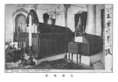
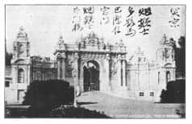

Resim: 11
Resim üstü sağ: 突王摩辣第一陵, Türk Sultanı MoLa’nın mezarı.
Resim altta: 王陵拓影, Sultan mezarı fotoğraf.

Resim: 12
Resim üstünde: 突京，烟颊士多影马巴洁住宫门，烟颊士，即门楼,
Türk başkenti, Yan Jia Shi Dolmabahçe (Ma Ba Jie) Sarayı’nın ana kapısı, Yan Jia Shi, Büyük Kapı.